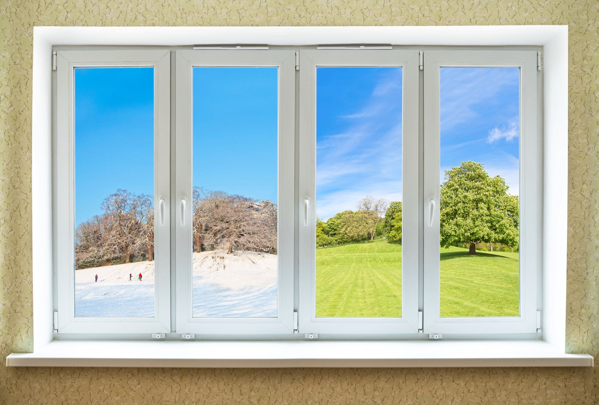
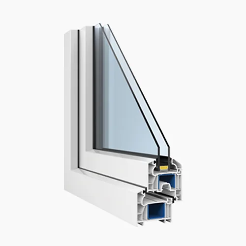
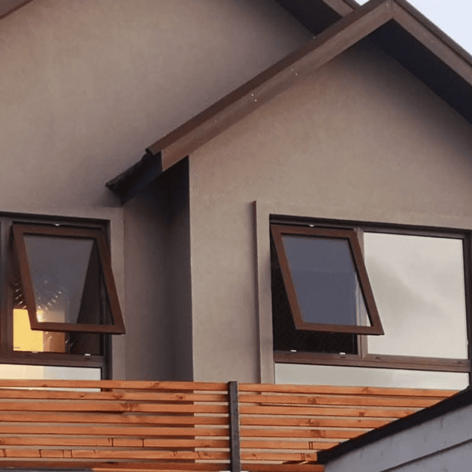
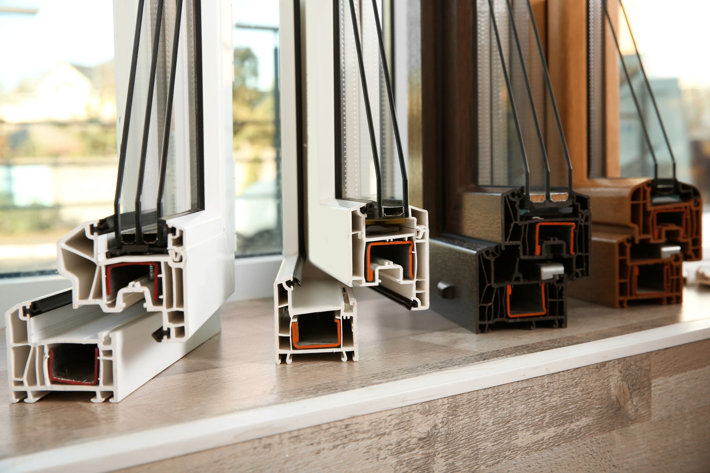
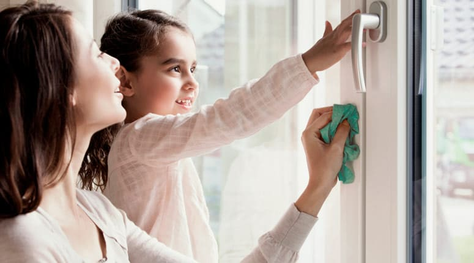
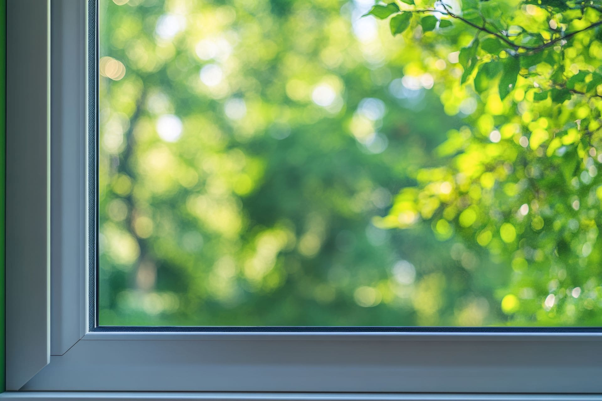

Blog Starwin
Descubre ideas, consejos y las últimas novedades sobre ventanas de PVC para transformar tu hogar.

Ventanas Termopanel de PVC: La Combinación Perfecta de Eficiencia y Estilo
Descubre cómo las ventanas termopanel de PVC no solo mejoran el aislamiento, sino que también elevan la estética de tu hogar, generando confort y ahorro.
Leer Artículo
¿Por Qué Elegir Ventanas Termopanel de PVC en el Desafiante Clima del Sur de Chile?
El clima frío y húmedo del sur exige soluciones robustas. Analizamos la superioridad del PVC en aislamiento térmico, acústico y resistencia a la intemperie.
Leer Artículo
Desmitificando las Ventanas Termopanel de PVC: ¿Qué Son y Cómo Aportan Valor?
Explicamos la ciencia detrás del termopanel (DVH) y los perfiles multicámara, claves para su alto rendimiento aislante y la eliminación de la condensación.
Leer ArtículoAhorro Real en tus Cuentas: Cómo las Ventanas PVC Reducen tu Consumo
Cuantificamos el impacto: menos calefacción y aire acondicionado se traducen en ahorros visibles en tu factura y un hogar más sostenible.
Leer Artículo
Instalación de Ventanas PVC: La Clave para un Rendimiento Óptimo y Duradero
Una buena ventana mal instalada no sirve. Detallamos la importancia de la medición, fijación y sellado hermético para maximizar los beneficios.
Leer Artículo
Más Allá del Blanco: La Versatilidad en Diseños y Acabados de Ventanas PVC
Explora las opciones estéticas del PVC: líneas modernas, colores sólidos y texturas que imitan madera, adaptables a cualquier estilo arquitectónico.
Leer Artículo
PVC vs. Aluminio vs. Madera: Análisis Comparativo para Elegir tus Ventanas
Enfrentamos los materiales más comunes: pros y contras en eficiencia, mantenimiento, durabilidad y costo para una decisión informada.
Leer Artículo
Ventanas PVC: Belleza Duradera con Mínimo Esfuerzo (Guía de Mantenimiento)
Olvídate de lijar y pintar. Descubre lo simple que es mantener tus ventanas de PVC impecables año tras año con cuidados básicos.
Leer Artículo
¿Son Sostenibles las Ventanas de PVC? Analizando su Impacto Ambiental
Evaluamos el ciclo de vida del PVC en ventanas: eficiencia energética, larga durabilidad, potencial de reciclaje y avances hacia una producción más verde.
Leer Artículo